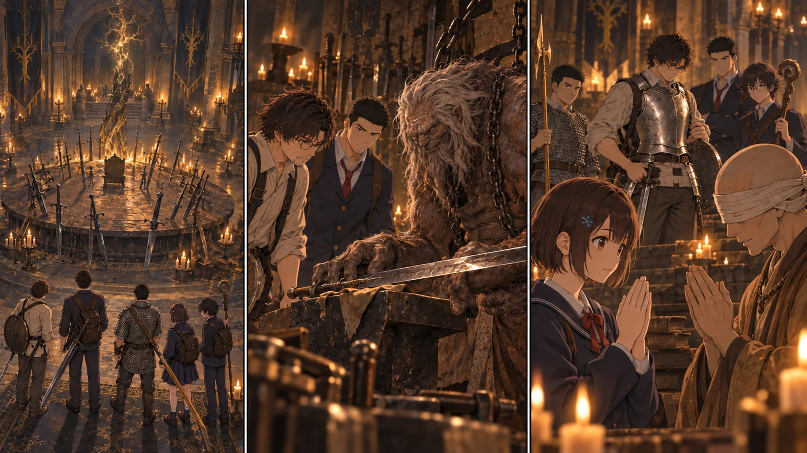

最新の本編へ · 前の場面へTURN1-47 · 剣を置ける場所。

【DAY39 17:40｜エレの教会】雨の向こうに、勝った城が見えない。先生は財布の中身を数えた。七百七十五ルーン。強い武器を持たせるところまでは来た。次は、それを持つ人間を無事に帰す支度だ。
メリナへ円卓の招待を受ける旨を伝え、装備を確かめる直人と大地、祈祷を学ぶ葵、魔術の相談をする悠の同行を頼む。彼女は四人を一人ずつ見た。「……あなたと、その四人を案内する。ほかの者まで、同じ道を得るわけではないわ」今回は五人への個別の案内だ。教会には結衣と蓮を含む二十八人が残る。
【18:00｜円卓】雨音が途切れた。次に聞こえたのは、遠くで鉄を打つ音だった。大きな円卓には、柄の違う剣が幾本も突き立っている。濡れた靴が敷物へ沈む。空を探して顔を上げても、そこには高い天井があるだけだ。
悠が杖を握り直す。大地は黄金の刃を持ち上げかけ、直人の視線に気づいて下げた。「ここで試すわけねえだろ」小声の言い訳に、葵が初めて少し笑う。ここでは武器を振るわない。
鍛冶場のヒューグは、挨拶より先に直人の大剣を見た。次に大地の斧槍。最後に先生の、傷のある小盾。「使う奴が増えたか。……で、石はあるのか」鎖が床を擦る音がした。
澪から預かった共同品の控えを開く。鍛石は、ない。一般の武器を強くする石と、黄金のハルバードに使う石も違うという。鍛冶師がいるだけで刃が強くなるわけではなかった。今回は点検と相談まで。武器の強化値は変えない。
直人は、砥石の小刀と戦灰を示した。「こっちは、ある」ヒューグの説明で、所持していた「嵐踏み」を君主軍の大剣へ装着できると確かめる。帰還後の祝福で、標準の属性を保ったまま取り付けることにした。一つの戦灰を二本に増やすことはできない。
【18:30｜双子の老婆】先生が探していた鎖帷子は、この売り場にはなかった。代わりにあったのは、騎士の鎧。胴だけの、銀色の鎧だ。値は四百五十。財布の半分以上になる。
先生は試着し、肩を回し、腰を落として立った。前へ出るのは変えない。だからこそ、布一枚のままでいる必要もない。小盾は残す。兜も脚甲も買い足さず、回避を妨げない組み合わせにする。総重量の細かな数値は未計測だが、歩行と屈伸で動けることを確かめた。
大地が胸当てを指の節で軽く叩いた。「先生だけ、制服のまんまってのも変だしな」直人は笑わずに頷く。その無言の同意の方が、先生には少し重かった。
【19:00｜祈祷の教え】コリンは葵の手元の触媒と、指先を見た。「傷を和らげる術は知っているのですね。では、まず落ち着いて祈る場所を作ることから」葵は、戦場でしゃがんだ自分の周りに何人いたかを思い返していた。
「回復」は百五十、「毒の治癒」は百。葵の信仰はどちらの条件にも届く。前者は近くの仲間も癒やせるが、詠唱中は守ってもらう必要がある。後者は術者自身の毒を治す祈祷で、触れれば全員の毒が消える薬ではない。腐敗や発狂まで治るわけでもなかった。
葵は二つを教わる。既存の小さな祈りと合わせても力が三倍に増えるわけではない。今は同じ三回分の余力を分けて使う。「全員を一度に呼ばないでください。二人ずつ、近くへ来てもらう方が、私にはやりやすいです」回復する側から、隊列の注文が一つ増えた。
悠は魔術についても尋ねたが、コリンの教えは祈祷だった。双子の老婆にも、今ほしい魔術の教本は見つからない。先生の先読みにある魔術師の情報は、まだ現地の師弟関係ではない。城でロジェールに会うこと、別の魔術師の所在を確かめることを手帳へ残す。今夜は見知らぬ魔術を増やさなかった。
【20:10｜エレの教会へ帰還】既に自分の足で訪ねている教会を選び、五人は戻った。結衣が一人ずつ名前を呼ぶ。「三十三。おかえりなさい」円卓へ行った五人だけが、そこへ戻る道を持っている。残った生徒を訪問済みにすることはできない。
陽太の兵士の上衣は、腕の継ぎ目が危うかった。カーレの補修材を二十五で買い、誠と楓が縫い直す。裂け目を指で押さえていた陽太が、ようやく手を離した。「これなら、次は服の心配しなくて済むな」傷の治療と、服の補修は別だ。
鍋と水袋も返却日が近い。カーレに現物を見せ、DAY42の朝までの延長を頼み、了承を得た。城を攻略したら改めて礼をし、買い取りや作り方を相談する約束は残す。まだ、先生たちの所有物ではない。
直人の大剣へ嵐踏みを取り付ける。大地の黄金のハルバードの戦技はそのまま。今夜は試し撃ちをせず、使う時の消耗は次の実行前に確認する。余ったルーンは五十。矢は百十八本。増やせたものと、まだ足りないものが、ようやく同じ紙に並んだ。
【21:00｜休息】先生は城への突入を一度止め、休息を挟むことにした。祝福で身体と瓶を整え、当番以外は横になる。颯は指笛を持ったまま寝返りを打つ。明日はDAY40。夜が赤くなることだけは、全員が知っていた。
原作参考と本卓の台詞・取引は区別。NPCの台詞は本キャンペーンの創作です。
参考1 /
参考2 /
参考3